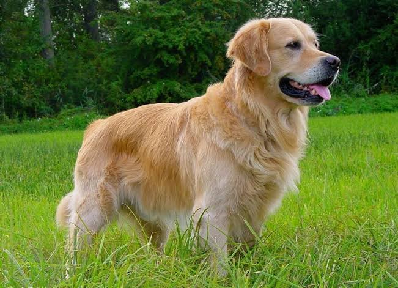

Somos una veterinaria de barrio con consultas, vacunas y estética canina para perros de todos los tamaños.
CSS en línea: este párrafo usa el atributo style directamente en la etiqueta.
Consulta general, vacunación, desparasitación y baño.
Externo: el color de fondo y la tipografía del body vienen de estilos.css. Interno: el color de los encabezados viene de la etiqueta style del head. En línea: el párrafo naranja usa style en la propia etiqueta.
Grupo 224 | Salón 4206 | Hora V1 | Martes | Carrera ITS
Laboratorio de Programación Web - Dr. Agustín Cortes Coss | AGO-DIC 2026